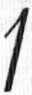
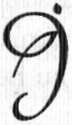
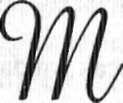
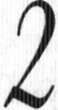
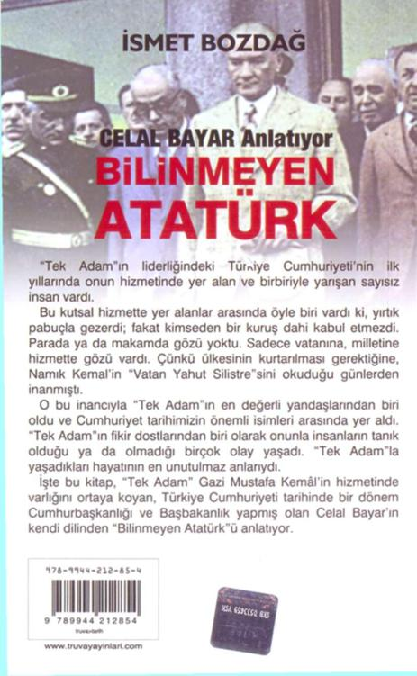

Bayar, son derece nazik bir dille, açıkça
meydan okuyor, Demokrasi açısından 1961 Anayasasının 1 9 2 4 Atatürk Anayasasından daha geri olduğunu, ancak bir "geçici anayasa" değeri taşıdı
ğını ileri sürüyordu.
27 Mayıs'ta Ankara'ya koşan "fetvacı profesörlerin, -hele o günlerin 27 Mayıs sarhoşluğu 230 • İ S M E T B O Z D A Ğ
içinde- hemen kaleme sarılacaklarını sanıyorduk.
Fakat hayret!
Bir iki köşe yazarının -konunun esasına girmeden- o günlerin alışkanlıkları içinde 'Yine mi sen!" gibisinden yazdıkları dışında, hiç ses gelmedi.. Artık umut kesmiştik ki, on ay sonra Ord. Prof.
Sıddık Sami Onar, "Fasit daire" diye bir yazı yayımladı. Bu yazıda, bizim "Başvekilim Adnan Menderes'
kitabının Ön söz'ünde ileri sürdüğümüz fikre, dolaylı olarak cevap veriyordu.
Sayın Bayar'la görüştük ve 1961 Anayasası
üzerinde, Sıddık Sami Onar'ı muhatap tutarak bir
tartışma açmaya karar verdik.
İlk yazı hazırlandı. Karşımızda bir hukuk otoritesi vardı. Bu yüzden, dikkatli davranmaya çalışıyorduk, bizim fikir sermayemiz, Atatürk'ün anayasa yorumları, Demokrasi'nin, HALK İDARESİ olduğu
felsefesiydi. Atatürk'ün de bir çok defalar işaret etti
ği gibi, Cumhuriyet, belli sürelerle seçimi yenilenen
"Süreli Hükümdar" rejimi idi.
Başka bir deyimle, "meşruiyet", müstebidin elinden alınmış, halkın eline devredilmişti! Halkın,
hükümdardan daha akıllı olacağı varsayımına dayanıyordu.
Bu nedenle çoğunluk, azınlıktan daha akıllıydı.
Yönetim, çoğunluğun elinde olacak, azınlık
onu eleştirecekti.
231 • B İ L İ N M E Y E N A T A T Ü R K
Yasalar karşısında bütün vatandaşlar eşitti.
Böyle bir anayasanın - 1 9 2 4 Anayasası böyle
bir anayasa idi- tek kusuru, halk istibdadına açık
olmasıydı. Ama halktan gelecek istibdat, istibdat olmaz, olamazdı!
Bu tartışmayı başlatmak için: "Gerekçe bekleyen bir Hüküm" başlığı altında bir yazı kaleme alındı. Fakat Bayar, Demokrat Partili siyasilerin sosyal haklarının iadesinin söz konusu olduğu o haftalarda, bu tartışmanın açılmasını zamansız buldu ve yazı yayımlanmadı. Biz bugün, tarih olmuş bu yazıyı olduğu gibi yayımlıyoruz.

II
Gerekçe Bekleyen Bir Hüküm
9 5 0 - 9 6 0 yıllar süresince Cumhuriyet Halk Partisi ile Demokrat Parti arasında cereyan eden mücadelenin hangi fikir kaynaklarından bes-lendiği konusunda açıkladığım fikirlerime, ancak
10 ay sonra, Sayın Ord. Prof. Sıddık Sami Onar'ın
"Fasit Daire" başlıklı yazısı ile dolaylı bir karşılık almış buluyorum.
Şu raslantıya bakın ki bu karşılık, tam memleketin Anayasa düzeninde bir buhran geçirmekte olduğu iddialarının Basın'da, Kamuoyu'nda yaygın
olduğu bir döneme çattı. Bu bakımdan, gerek Sıddık Sami Onar'ın fikirlerine ve gerekse, memleketin içine düştüğü çalkantının sebeplerine temas etmeksizin, bu konudaki düşüncelerimi yeniden açıklamak ihtiyacını duydum.
Önce, şu sorunun karşılığını vermek lazımdır: Bugün memleketin içine düştüğü çalkantı ve 233 • B İ L İ N M E Y E N A T A T Ü R K
bunalım, bir tek "Anayasa" kaynağından, bir tek
"Ekonomik kaynak'tan, bir tek "Yeniden biçimlenen dünya düşüncesi" kaynağından mı gelmektedir; yoksa, bunların her birinden payını alarak ortaya çıkan yeni bir, "Tekevvün", yani, yeni bir
"oluş" mudur?..
Bence, yeni bir "01uş"un karşısındayız.
Bu "Oluş"un kaynakları, "Teknik"in, "llim"i aşması neticesinde doğan, yeni bir "Dünya" ve "Ya
şama" anlayışı olduğu kadar, gelişmekte olan Türkiye'mizin yeni ekonomik problemler ortaya çıkarması ve bunların 1961 Anayasası içinde -memleketin ihtiyaçlarına uygun olarak- biçimlenememesidir.
Anayasa üzerinde yapılacak düzeltmeler,
memleketin bugünkü problemlerine tek başına bir
cevap olmamakla beraber, öteki faktörlerin yarattığı
problemlerimizi halledebilmek için, idare şeklimizin
temel prensiplerini, "Millî Geleneklerimizin ve yatkınlıklarımızın aydınlığında yeniden gözden geçirmemiz, kaçınılmaz bir sonuçtur.
Anayasalar, kitaptan çıkmaz, hayattan çıkar.
İster bizden ileri, ister bizden geri olsun, başka bir
memleketin Anayasa Felsefesi, Türkiye'mizin Anayasa temeli olamaz! Anayasa, uygulanacağı sosyal bünye, geliştirdiği Devlet ve idare biçimi ile sıkı sıkıya ilgilidir.
234 • İ S M E T B O Z D A Ğ
Sayın Sıddık Sami Onar'ın şimdiye kadar yayımladığı yazılardan çıkardığım sonuçlara göre, sanıyorum ki, anayasaların, o milletin idari geleneklerine dayanması gerektiği konusunda fikir birliğimiz vardır. İhtilafımız, bu noktadan sonra çıkıyor. Sayın Ord. Profesörün Osmanlı Devlet yapısına bakışı ile
benim bakışım arasında hangi farklann olduğunu ve
bunların nereden geldiğini burada tartışmayacağım.
Anayasaların, sadece Vatandaş Haklarını ve
Hürriyetlerini teminat altına alması düşüncesi,
1789'da, Fransız İhtilalinin Reaksiyoner düşüncesinde kalmıştır.
Anayasaların bazı sosyal kalıplamalar yapması
elbette gereklidir. Bu noktada da Sayın Onar ile beraberiz. Ama, Orman Suçlarının affedilemeyeceğini, filan insanların siyasi haklarını kullanamayacaklarını anayasa Nas'ları hâline getiren düşünce biçimi, sadece
-Sayın Onar'ın ideologluğunu yaptığı- 1961 Anayasamız içinde kalıplanmıştır!
Hem hayat ve toplum dev adımlar ile yürüyecek, hem Anayasanın içine, orman suçlarına varıncaya kadar günlük işler yerleştirilecek; hem de bu anayasa, kıyamete kadar değiştirilmeyecek!..
Bunu, selametli bir düşünce ile anlamaya imkân yoktur!
Memleketin Hukuk Otoritesi olan Sayın
Onar ile Anayasa felsefesi bakımından uyuşmama-
235 • B İ L İ N M E Y E N A T A T Ü R K
mızın, şahsımız için hiçbir önemi yoktur. Elde edebildiğimiz bilgilerin yetersizliği yüzünden de böyle bir noktaya gelmiş bulunabiliriz.
Ancak, aynı memleketin bir politika adamı
ile, bir ilim adamının, bir hukuk otoritesinin Anayasa gibi temel yönetim politikasında anlaşamamalarının ehemmiyeti büyüktür, Devlet ve Millet zararınadır!
Hele, memleketin çalkantılar ve bunalımlar
içine düştüğü şu günlerde, vatandaşlar ve çeşitli
zümreler arasında samimi bir diyalogun kurulabilmesi için, Politikacı ile Bilginin mutlaka bir diyalo
ğa girmesi, mutlaka fikirlerini kamuoyunda, bütün
şahsi endişelerinden, bütün menfaat ve kaygılarından sıyrılmış olarak samimiyetle ortaya dökmesi şarttır. Ben buna hazırım!
Ancak, böyle bir söyleşmeye girmeden önce,
Sayın Onar'ın imzasını taşıyan bir hükmün, hukuki
gerekçesini öğrenmem, bundan sonra yapacağımız
konuşmaların güven kaynağı olacaktır.
27 Mayıs 1960 tarihinde Millî Birlik Komitesinin daveti üzerine, İstanbul Üniversitesi'nden 7
kişilik bir hukuk kurulu Ankara'ya gelmiş ve Sayın
Onar'ın başkanlığında toplanarak Ünversite ve Bilim adına bir DURUM RAPORU hazırlamıştır. Raporun tamamı üzerindeki düşüncelerimi burada belirtmeyi, enfüsî hükümler üzerinde tartışmaya
girmeyi yersiz bulurum. Ancak, "BAŞVEKİLİM AD-
236 • İ S M E T B O Z D A Ğ
NAN MANDERES" adlı kitabın ön sözünde ele aldı
ğım bir "Hukuk Hükmü"nün gerekçesini söylemekle yetineceğim.
Bu sözünü ettiğim kitabın ön sözünde demiştim ki:
"Rapor, DP İktidarı'nın meşruiyeti konusunda
şunları söylemektedir: "Bir hükümetin meşruiyeti,
sadece menşeinde, yani iktidara gelişinde değil, iktidarda, kendisini bu mevkie getiren anayasaya riayeti ve millet efkârı, ordu, kaza ve ilim müesseseleri gibi
müesseselerle iş birliği yaparak hukuk nizamı içinde
yaşaması ile ve devamı ile mümkündür".
1924 Anayasasının temel fikirlerine göre,
Hükümet Meşruiyetini, Anayasa ve Halk İradesi ile
sınırlamak elbette doğrudur. Fakat, "Ordu, Kaza ve
İlim müesseseleriyle işbirliği" yolu ile ortaklaşa
Devlet Yönetiminin 1 9 2 4 Atatürk Anayasasının
hangi maddelerinde yazılı olduğunu bilmeye imkân
yoktur!.
Bu, apaçık şunu göstermektedr: Üniversite,
anayasada yazılı olsun, olmasın, kendisini devletin
ortağı saymakta ve hükümetin meşruiyetini bu ortaklığın tanınmasına bağlamaktadır.
Bir başka deyimle hükümet ve iktidar, anayasada yazılı ödev ve görevlerini yapmadığı için değil, Anayasada yazılı olmayan, fakat varsayılmış birtakım ödev ve görevlerini yapmadığı için suçlanmaktadır!."
237 • B İ L İ N M E Y E N A T A T Ü R K
Şimdi sayın Onar, lütfen 1924 Anayasası
maddeleri içinde; İktidar ve Hükümetin "Ordu, Kaza ve İlim Müesseseleriyle iş birliği yapmak zorunluluğunu getiren hükümleri bana göstersin! Bunları bilmek ihtiyacındayım; çünkü, koskoca bir parlamento, bu hükme dayanılarak fevkalade mahkemelere çekilmiş, vekiller, başvekiller asılmış, devlet başkanları, vekiller, milletvekilleri genelkurmay
başkanları münferit taş hücrelerde çilelerini doldurmuşlardır. Dünya tarihinde ilk defa cezalandırılan bir parlamentonun, cezalandırma gerekçesi bu hükümdür.
Eğer Sayın ONAR'ın "Fasit Daire" başlıklı yazısında belirttiği gibi; "Gerçek Millî İrade, halkın ihtiyacını, ıztırabını gösteren kişisel iradelerle, bunlara çare arayan ve DEMAGOJİYE BAŞ VURMAYAN, TAVİZ VERMEYEN teknik ve bilimsel, dinamik,
sosyal müesseselerin iradelerinin bileşkisi" ise, asgari bu sözlerine katılabilmemiz için, 27 Mayıs 1960
günü HUKUK ve BİLİM adına başkanlıkları altında
hazırlanan durum raporundaki şu küçücük tek
cümlelerini, 1 9 2 4 Atatürk Anayasası maddeleri
içinde aydınlatmak zorundadırlar. Buyurun Sayın
Onar, sizi samimiyetle dinliyorum.*
* Bayar, hazırladığı bu yazısını yayımlamadı.

Bayar Böyle Dedi
nönü'nün birinci ölüm yıldönümü idi. Bir
kaç gün önce sayın Bayar'a:
-Ölüm yıldönümünde İsmet Paşa için yu-
muşak bir beyanat vermeyi düşünür müsünüz? dedim. Dönüp yüzüme uzun uzun baktı ve hiçbir şey söylemeden, duymamış görünerek, başka konuya
atladı. Aradan bir kaç gün geçtikten sonra, yine beraberdik; birdenbire bana:
- İnönü için benim yumuşak beyanat vermemi o gün benden niçin istediniz? diye soruverdi. Biraz sıkıntıya düştüm, sonra açıkça anlattım:
- Beyefendi, ben sizin -Allah geçinden versin-
bir emr-i hak vukubulunca Anıtkabir'e gömülmenizi isterim. Biliyorsunuz, bu, bir Kamuoyu meselesidir. Birçok defalar konuştuk ve sizinle mutabık kaldık ki, Türkiye'de kamuoyu, aydınlarımızın -tamamı değil- bir bölümünün elinden, dilinden oluşur.
Bunların çoğu da İsmet Paşacıdır. Çünkü İsmet Pa-
239 • B İ L İ N M E Y E N A T A T Ü R K
şa, Türkiye'de Devletçi düzeni kurmaya çalışan bir
Başvekildir. Fethi Bey'in Liberalizmi karşısında -ister istemez- devletçiliğe sarılmış ve bu yüzden Marksistlerin itibarına mazhar olmuştur. Bir de,
Marksist fikriyata mihraklık eden "Kadro" dergisini arkalamış oluşu, onu Marksistlerin gözünde çok
yüceltmiştir. Siz, bu bölümü okşayacak bir beyanat
verirseniz, aradaki buzlar erir, yarın biz "Anıtkabir"
meselesini attığımız zaman, yumuşak bir mukavemetle karşılanmış oluruz", diye düşünüyorum.
Bayar, muhabbetle yüzüme baktı. Elimi avu-
cuna aldı. Duygulandığı kimselere böyle davrandı
ğını bilirim:
- İsmet Bey, dedi, sizi düşüncenizde haksız
bulmam. Beni düşünerek bu teklifi yaptığınıza inanıyorum. Açık söyleyeyim: Muhteşem bir abide olduğu için değil, Atatürk yattığı için Anıtkabir'de gömülmeyi ben de isterim. Ona yakın olmak, benim için, hayatta da, ölümde de kıl kadar fark etmez.
Fakat bunu temin etmek için benden bir hareket
beklemeyiniz!. Çünkü ben, bütün hayatımda hiçbir
şey istemedim ve özendiğim hiçbir şeye istekli olmadım! Bana hep "gel şu işi yap" dediler, ben o işin üstesinden gelmeye çalıştım. İttihat ve Terakki Cemiyeti'ne girişim öyledir, İzmir Katib-i mesullüğüm
öyledir, Ankara'da TBMMeclisi'ne gidişim öyledir,
Bakan oluşum öyledir, Başvekil oluşum öyledir, De-
240 • İ S M E T B O Z D A Ğ
mokrat Parti'yi kuruşum, Cumhurbaşkanı oluşum
öyledir.. Ben bunların hiçbirine talip olmadım ve
hiçbiri için özel bir gayret göstermedim. Bu belki
bir kusurdur ama, benim böyle vaz geçemediğim
bir kusurum var..
Öldüğüm zaman beni nereye gömecekler?
Bir saniye bile aklımı işgal etmez. Bu millete aralıksız 85 sene hizmet etmiş bir insanım. Bazı şeyleri istemek benim hakkım olabilir!. Ama hayır, benim itiyadımı bozmayınız İsmet Bey... Günümüze hükmedemiyoruz; bir de geleceğe hükmetmeye kalkmayalım!
İşte Sayın Bayar'ın bana söyledikleri... Aklımda kaldığı gibi yazdım. Benim görevim de bundan ibaret!. Naaşı henüz toprağa verilmediği için Rahmet dilemiyorum ama, huzur diliyorum. Allah sevenlerine sabır ihsan etsin!

Bayar'a Göre
ihail Gorbaçov, Sovyetler Birliği'ni yeni
bir modele götürüyor: Prestroyka. Bu
konuda yazılmış bir de kitabı var. Gerek
kitabın incelenmesinden ve gerekse Gorbaçov'un
son Parti Konferansı'nda yaptığı konuşmalardan anlaşılan şu:
"Yeniden yapılanma" Sovyetler Birliği'nin, sadece üst-yapısında gerçekleştirilecek: seçimle oluşturulmuş bir Meclis, bu Meclis'in seçeceği yetkili bir Başkan! Yâni, 1923 Türkiyesi..

0 Ağustos 1986 Çarşamba!
Gökyüzünün mavi örtüsü taş kesilmiş, İstanbul cayır cayır yanıyor.
Her şey, âdeta buharlaşmış kadar sıcak, ya da
uçacak kadar buharlaşmış!
Çiftehavuzlar'da Sayın Bayar'ın evi, unutulmaz bir gün yaşıyor. Köşkün en serin odasında yatan Bayar, bu amansız sıcakla boğuşmakta!..
Sevgili kızı Nilüfer Gürsoy ve gerçekten -eşi
kolay, kolay bulunmaz- Damadı Ahmet Gürsoy,
bütün sevgileri, bütün dikkatleriyle başucundalar!
Bayar, dışarı çıkamadığı, gazete okuyamadığı
ve ara sıra kabul edebildiği yakın dostlarından başka kimseyle de görüşmediği için, dünya ile haber ilintisini ev halkı sağlıyor. O gün de hoş bir olay olmuş; telefon çalmış, Anadoludan bir meraklı soruyor:
- Celal Beyefendi'nin hastalığı hakkında gazetede bir haber gördük, sağlığı nasıl?..
Gerekli bilgi veriliyor. Telefondaki zat:
243 • B İ L İ N M E Y E N A T A T Ü R K
- Ben, Hacı İlyas Sami Muş'un zevcesi adına
telefon ediyorum; Kendisi hasta, telefona gelemedi,
fakat Beyefendinin sağlığını çok merak etti. Ayrıca
şunu da öğrenmek istiyor: Celal Beyefendi'nin eski
arkadaşı olan kocası Hacı İlyas Sami Muş'u acaba
hâlâ hatırlıyorlar mı? diyor.
O akşam Nilüfer Gürsoy ve Ahmet Gürsoy babalarının baş ucundadırlar... Celal Beyefendi'nin göğsü sıkışıyor ve göğsünü boşaltmakta büyük güçlük çekiyor ama, yine de konuşmaktan ve dinlemekten
vazgeçmemiştir. Kızı Nilüfer Hanım, kendisine o
günkü telefonu naklediyor. Bayar, dikkatle dinlemiştir. Bir an, kaşlarını hafifçe çatarak düşünüyor, sonra yüzünün çizgileri açılarak konuşmaya başlıyor:
-Hatırladım... İyi tanırım kendisini! "Muş"
soyadını da ona Atatürk vermişti. Hoşsohbet, vatanperver, kendisine has bir adamdır. İyi Arapça bilir, Farsça bilir. Biz ona "Şarkiyatçı" derdik... Ölmüş
mü?.. Allah rahmet eylesin! Karısı benim hatırımı
soruyor demek! Teşekkür ederim!
Hafıza mükemmel... İhata mükemmel... Muhakeme mükemmel... İdrak ve intikal sürati, mükemmel!.. Yalnız, güçlükle nefes alıyor... Öksürüyor, fakat boşaltamıyor göğsünü... O menhus hastalık, bugüne dek, eşi görülmemiş biçimde ve şiddette bastırmış!.. "SOL KALP YETMEZLİĞİ" denilen bu illet, ilk olarak, Kayseri Cezaevi'nde kendisini göstermişti. O gün-bugün, Bayar, bütün fonksiyonlarıyla sağ-
244 • İ S M E T B O Z D A Ğ
lamdır, bütün azalar tam ve noksansızdır; bütün
kan ve idrar tahlilleri müsbet çıkar; tansiyonu
hiçbir zaman 16'yı geçmemiştir de, toplumunun solu gibi, kalbinin de solundan sıkıntıdadır!
20 Ağustos 1986 Çarşamba günü, yani, şu ayrıntılarını açıkladığımız gün, 104. yılının, 114. gününü yaşamaktadır! Akşam, saat 21...
Kalbin sol yanı, ihanete hazır... Temizlenmek
için ciğerlere giden kan, vücuda pompalanamadığı
için, ciğerleri dolduruyor, oksijen eksikliği mor lekelerle kendisini aşikâr ediyor! Müdavi doktoru Prof.
Dr. Koptagel İlgün, yanında asistanı doçent Emin ile
saat 21'de hastanın baş ucundadır.
Hastalık bilindiği için, oksijen tüpü gelmiştir;
hatta aspiratör gelmiştir; gerekli bütün müdaheleler
için her şey hazırdır! Bayar, yeniden muayene edildi
ve gerekli önlemler alındı. Ancak gerçek çare, aspiratör cihazına alınmaktadır; bunun için hastanın bayılması gerek!
Bu bayılmaya kalbin dayanması gerek!
Bu işin en iyi biçimde yapılabilmesi için, hastanın hastahaneye nakledilmesi gerek!
Bunlar, son gerekler... Doktorlar istiyor ki,
bunlara gerek kalmadan, daha küçük önlemlerle
kalp biraz yardım etsin, ciğer biraz ferahlasın ve vücudun öteki azalarının taşıdığı sağlamlık, Bayar'ı, bu dar geçitten çekip çıkarsın!
245 • B İ L İ N M E Y E N A T A T Ü R K
Saat 10'da, doktorlar ayrılıyorlar! Eğer bir fevkaladelik olursa, bir telefon, hemen yetişecekler! Böylece kapıdan çıkan doktorlardan biri, az sonra, geri dönüyor; Asistan Dr. Emin:
- Ben diyor, hastanın yanında kalacağım!
Aile, çok duygulanıyor bu ilgiye.. Teşekkür
ediyorlar ve doktora, Bayar'ın yattığı odanın bitişi
ğinde bir yatak hazırlamaya girişiyorlar. Bunu fark
eden doktor:
- Hayır, diyor ben, hastanın baş ucundaki
koltukta bekleyeceğim! Ve öyle yapıyor.. Bayar'ın
damadı Dr. Ahmet Gürsoy da beraber, hastanın baş
ucunda bekliyorlar ve gelişmeleri gözlüyorlar.
Hastalık hafifleyeceğine, artmakta gibidir...
Hasta ızdırap çekiyor. Asistan, durumu hocasına
bildiriyor; az sonra, Sosyal Sigortalar Göztepe has-
tahanesinin İç Hastalıkları uzmanı Prof. Koptagel İl-
gün, hastanın başucundadır.
Hastayı dikkatle muayeneden geçiren Dr.
Koptagel İlgün, artık küçük tedbirlerin yetmediğini,
hastanın "Aspiratör cihazına" bağlanması gerektiğini, bunun en iyi, hastahanede yapılabileceğini söylüyor; sonra da: "Bu bir kalp hastalığıdır; hastayı tanıyan Dr. Siyami Ersek'in bir kere görmesinde yarar var" diyor.
Telefon ediyorlar; tam on dakika sonra Siyami Ersek Bayar'ın baş ucundadır. Kısa bir muayene 246 • İ S M E T B O Z D A Ğ
ve fikrini söylüyor: Meslektaşı Koptagel İlgün'ün
hakkı var, sayın Bayar hastahaneye kaldırılmalı...
Artık "karar" ailenin!..
Kızı ve damadı baş başa verip birbirlerile isti
şare ettikten sonra, durumu Bayar'a iletmeyi uygun
görüyorlar. Ahmet Gürsoy, doktorların düşünce ve
kararını açıklıyor... Bayar'ın bütün şuur ve melekeleri yerinde... Biraz düşünüp, "Siz bilirsiniz." anlamına ellerini iki yana açarak, gözlerini kızının ve damadının yüzünde gezdiriyor. Sonra bir eliyle kızının bile
ğini, bir elile damadının bileğini tutarak, avuçlarını,
avuçlarına yapıştrıyor; ve yer yüzünde fanilerin duyacağı son sözünü söylüyor: PEKİ, GİDELİM!..
Bu son kelimeleri ağzından çıkarırken, hastahaneye gideceğini elbette biliyordu; fakat acaba, ölümle kucaklaşmaya gittiğini hissetmiş miydi!.
Kimbilir, belki de!..
O haliyle davrandı, yatağında doğruldu; elbiselerini giymek, kendi arabasına binmek ve öylece hastahaneye gitmek düşüncesindeydi.
Doktorlar, gereksiz buldular bu etiketi. Ambulans zaten gelmişti. Sedyeye alınıp hastahaneye yorulmadan götürüldü. Kendisine durum bildirildi;
artık, denilenleri direnmeden yapıyor, kendisini
tıbbın hazakatine teslim etmiş bulunuyordu.
Sedyeye alındı, ambulansa konuldu, Sağlık
Bakanlığı Haydarpaşa Göğüs Hastalıkları hastaha-
nesine götürülüp, doğruca "yoğun bakım" bölümü-
247 • B İ L İ N M E Y E N A T A T Ü R K
ne yerleştirildi. Bir kaç dakika içinde kola serum takılmış, ciğerleri harekete geçirecek aspiratör hazırlanmıştı. Serumun içinde, belli miktarda uyutucu bulunduğundan, Bayar, herhalde odanın giderek
sislendiğini, sevdiği kızı ve damadının yüzlerinin
bir sisli huni içinde uzaklaşarak küçüldüğünü fark
etti ki, son bir hamle ile kızının elini tuttu.
Bayar'ın dünyada bilerek yaptığı son hareket
de, bu şefkat işareti ve hayata sarılış oldu... Artık uyumuştu! Aspiratöre bağlanabilmek için "uyumuş olmak" şarttı!
Büyük devlet adamı Sayın Celal Bayar, 104
yıl, 114 gün, şuurla, vakarla, şeref ve faziletle yaşadıktan sonra, 16 saat süren son büyük uykusunu uyudu ve 22 Ağustos Cuma günü saat 21:15'te aramızdan ayrıldı. Allah rahmet eylesin!
